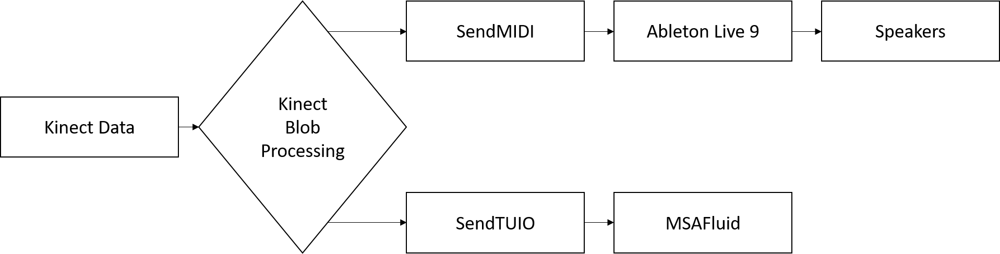

Sound Design in Non-Traditional Instrument Contexts
Naomi Mason | 43565337
Abstract
This report aims to investigate the role of sound design in the context of physical computing, particularly in the growing physical Musical Instrument Digital Interface (MIDI) controller sphere. In particular, this report will look at how this plays into the design of MozART; a large X/Y pad style instrument developed at the University of Queensland. In particular, this report will investigate a variety of approaches taken by MIDI developers in creating both musical installations and electronic instruments in creating both predictable and playful audio output. It was discovered that as MIDI as a platform allows users to endlessly customise how each device interacts with sound, the way each device allows the player to perform varies depending on the user’s personal preference.
Sound Design in Musical Instruments
MIDI as a platform allows the modern musician endless ways to play, with seemingly endless different devices. From a twist on a piano keyboard which allows for pianists to play like guitarists, all the way to a three axis wearable accelerometer which controls MIDI CC messages; the only limit on this platform is the user’s imagination. This does unfortunately make sound design for these instruments somewhat of a pain, as while there are no restrictions on what each instrument can do, there’s also real intended sound that any particular instrument should create. As such, this can become quite daunting for some musicians just starting out, as they are faced with the challenge of engineering their own sounds before they can even play around with their new piece of hardware.
One of the few consistencies across most keyed and pad MIDI controllers, however, is the presence of velocity. A similarity that most performers need across both acoustic and digital instruments is control over the volume of the instrument whilst playing. In acoustic instruments, this is controlled by the velocity that you would either hit the note, and as such it has become an integral part of instrument design to replicate this component of acoustic performance in a digital environment.
MozART for the most part appears as if it was an X/Y pad style instrument, the closest in relation being a Kaossilator. As we determined reasonably early on that we wanted to generate sound in this iteration, we looked at the approach taken by KORG to develop a device wherein there weren’t any clear distinctions between notes, or scales. We discovered that the instrument utilised the X/Y pad in a way which used both axis to determine the pitch of the note. Similarly, the device itself also incorporated a utility which locks the range of playable notes to a scale, ensuring that there wasn’t an opportunity for the performer to accidentally slide onto a wrong note. We felt that both of these particular quirks of the device would ensure that users would be able to quickly learn the very basics of operating MozART. (KORG, 2016)
Sound Design in Public Installations
As MozART occupies a space where it can exist as an instrument as well as an installation, we took into consideration the approaches taken by a few other large format musical installations. In particular, we investigated the approaches taken in the sound design of our project influences, as well as Robin Fox’s Giant Theremin.
Firewall was the most similar in structure to the MozART frame, making the sound design of this installation reasonably important in developing a predictable framework for the musicians to explore. Utilising the Max framework, Firewall is less about allowing users to create complex melodies, but more about conducting a digital pianist – using the wall as a window for the users to fully immerse themselves into the experience. We had already determined that we were not going to limit the users to a set melody (as was the case in this installation), but we did take into consideration after further reviewing this particular installation the benefit of limiting the range of notes the user could play as to ensure that the sounds produced weren’t chaotic. (Sherwood, 2012)
We became reasonably interested in Sulcus Loci’s sonic interaction between nodes, as we considered the possibility of manipulating the sounds of the UQ Touch Ensemble. As the installation acted similarly to that of a brain acting at a neuron level, each node was interconnected, creating less of a series of independent musical instruments, but rather one ubiquitous device. It was noted that in designing the sonic component of the installation, the audio component was altered from its original vision to better fit the visual component, which was something we didn’t focus on during the first iteration of MozART, thus resulting in mismatched audio and visual components. As a result it became a priority to develop sounds which complimented the visuals, rather than the other way around. (Klein, 2016)
The Giant Theremin is less concerned about having a static auditory component. Embracing more of the flexibility seen in aforementioned MIDI instruments – the Giant Theremin acts more as a framework by which other musicians are able to contribute their own musical components to ensure that users are constantly discovering new ways to play with the device. As an instrument, it interprets the space around the pyramid structure, tracking the position and size of shapes, which it then converts into sounds which it picks from a set list. The resulting sounds are certainly not what one would describe as sonically pleasing, though that is well in line with the overall aesthetic present in the architecture of the device itself. (Fox, 2011)
Giant Theremin - A multiuser multivoice public installation
An interesting approach which is shared between both the Giant Theremin and Firewall is a preprogramed sequence of sounds which are then played back in accordance to a number of variables as the users interact with each respective object. Both track the velocity and area of blobs to determine the rate of playback and volume respectively. Firewall acts as an interface in which the users conducts a digital pianist, who will perform the piece back at the rate of the user’s movements, which is a somewhat different approach to that of the Giant Theremin. The Giant Theremin picks a music device which has a sequence of sounds it steps through at the same pace of passers-by. This effect works reasonably well when the collection of sounds are seemingly random, though problems do arise when the Theremin’s voice is changed to perform a variety of carols for the entire duration of the month of December.
The volume of playback however, makes very similar assumptions for both installations. This once again also leads back into one of the very few consistencies across the board in digital instrument design: note velocity. As neither installation can support note velocity in the same manner as their much smaller consumer counterparts, both take a very similar approach to deciphering what the “velocity” would be interpreted as. In the case of the Firewall, the interaction tracks the depth of the blob and then adjusts the velocity of the next note to in accordance to how much pressure the user is exerting on the screen. As Giant Theremin does not utilise Kinect technologies, it assumes that the larger an object is, the closer it must be to the installation, and increases the volume in accordance to this. We felt that both of these devices had a reasonable approach for utilising “depth” in a way that any user would be able to understand, and as such, we decided that for MozART to predictably operate for both musicians and non-musicians alike, we too should tie the depth (size) of the blobs to the velocity output on each subsequent note.
MozART's Sound Design
MozART was initially developed as an installation which would allow users with little to no musical experience a platform to explore creating consistently sonically pleasing music. As we wanted to limit the chances that the users would create a sound that they would find abhorrent, we opted to make the instrument more of an effect rack (manipulating the sound instead of producing from scratch). We discovered that by limiting the amount of control users had over the sound itself resulted in most users being reasonably unaware they were changing anything in particular regarding the sound. As such we decided that any future iterations would need to have a much more involved musical component.
In the second iteration, we became more concerned about developing MozART as a standalone instrument of sorts, allowing more advanced users to explore musical performance outside the space of an analogue instrument. As we were developing this alongside the UQ Touch Ensemble, we tried to model the sonic component on the kinds of instruments they were drawn to throughout the rehearsal phase. Reasonably early in the development, we noted that a reasonable number of participants were classical musicians with little experience in digital music production. We were also reasonably concerned with producing sounds which matched the visuals and the semiotics of the structure itself. Given that we had received a fair amount of positive feedback regarding the visual component during the first iteration, it was decided reasonably early on that the instrument would retain the MSAFluid style visuals.
From this, we were able to determine a few key areas which would guide the overall sound design of the instrument:
- The instrument would be in the bass clef, as both musicians and listeners have come to expect that large instruments are located in that vocal range.
- The instrument would need to sound somewhat similar to an instrument the performers were familiar with in the context of classical music.
- The instrument would need to have an ethereal vibe, as it was noted that the visuals created an effect similar to Van Gogh’s Starry Night.
A recording of the initial sound produced using the device.
Limitations of MIDI
One persistent issue with developing digital musical instruments is the limited responsiveness of the instrument itself. As you provide more means of manipulating a particular system, you increase the delay between an action being taken and the audio being outputted. For the most part, this delay is near negligible, and wouldn’t impact most musicians within the context of digital music production and performance, however, in our particular case we had several layers of pre-processing that MIDI data had to go through before it even reached Live. As a result, the instruments that we decided to opt for had to be as low latency as possible, which resulted in us settling for using audio samples in lieu of generating a sound which we could manipulate at a base level. (Ableton, 2016)

Basic Signal Flow Diagram of MozART - Parallel processes increased the latency between user input and audio output
Throughout the development of MozART we continued to have issues with the way Ableton would process MIDI messages received from Processing. While we had already established that latency would be a limiting factor in terms of what devices we could use to generate sounds, we didn’t anticipate that Ableton would never recognise any MIDI note off data. This wasn’t so much an issue for components of the installation controlled by MIDI CC, as dials consistently being told to stay in the same position doesn’t detract from the overall experience, however, it proved to be a massive problem in performing melodies on the instrument.
As notes had no definite end, we had to abandon the concept of the ethereal sounding instrument, due to the samples which provided this effect having a reasonably long tail (making it so that the instrument would not stop playing the note when the player removes their hand from the screen). Our work around for this ended up being a simple sine wave, which constantly looped while the blob was alive. Ideally if in future iterations we could resolve the issue with MIDI notes, we could attempt to reincorporate the ambient sound that we initially had.
Footage of the final sound achieved through the MozART instrument
In conclusion, MozART is an amalgamation of a variety of concepts learnt from a variety of instruments and installations alike. While we were unable to determine a winning formula for developing the audio component of a digital musical instrument, we did note that there were a few consistent mappings that designers opted to use, despite how different the context may be. At this point in time, if MozART was to be further refined, it would for the most part be minor performance tweaks to help resolve some of the issues we encountered with Live throughout this iteration.
Bibliography
Ableton. (2016). MIDI Fact Sheet. Retrieved from Ableton Reference Manual Version 9: https://www.ableton.com/en/manual/midi-fact-sheet/
Fox, R. (2011). Giant Theremin. Retrieved from City of Melbourne: http://www.melbourne.vic.gov.au/arts-and-culture/film-music-busking/Pages/giant-theremin.aspx
Klein, E. (2016). Sulcus Loci – with the University of Queensland and Svenja Kratz. Retrieved from Eve Klein.com: http://www.eveklein.com/project/sulcus-loci/
KORG. (2016). Kaossilator 2. Retrieved from KORG: http://www.korg.com/uk/products/dj/kaossilator2/
Sherwood, A. (2012). Firewall. Retrieved from Aaron Sherwood - Blog: http://aaron-sherwood.com/blog/?p=558